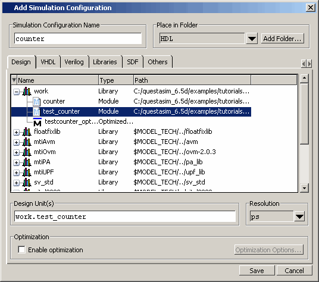
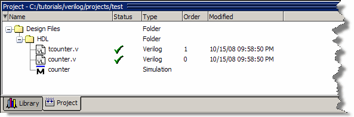

A Simulation
Configuration associates a design unit(s) and its simulation options.
For example, let us say that every time you load tcounter.v you
want to set the simulator resolution to picoseconds (ps) and enable
event order hazard checking. Ordinarily, you would have to specify those
options each time you load the design. With a Simulation Configuration,
you specify options for a design and then save a “configuration”
that associates the design and its options. The configuration is
then listed in the Project window and you can double-click it to
load tcounter.v along with its options.
Procedure
- Create
a new Simulation Configuration.
- Right-click
in the Project window and select from
the popup menu.
This
opens the Add Simulation Configuration dialog box (Figure 1). The tabs in this dialog box present
several simulation options. You may want to explore the tabs to
see what is available. You can consult the Questa SIM User’s
Manual to get a description of each option.
Figure 1. Simulation Configuration
Dialog Box
- Type “counter”
in the Simulation Configuration Name field.
- Select HDL from
the Place in Folder drop-down.
- Click
the ’+’ icon next to the work library
and select test_counter.
- Click
the Resolution drop-down and select ps.
- For Verilog,
click the Verilog tab and check Enable hazard checking
(-hazards).
- Click Save.
The files tcounter.v and counter.v show
question mark icons in the status column because they have changed
location since they were last compiled and need to be recompiled.
- Select
one of the files, tcounter.v or counter.v.
- Select .
The Project
window now shows a Simulation Configuration named counter in
the HDL folder (Figure 2).
Figure 2. A Simulation Configuration
in the Project window
- Load the
Simulation Configuration.
- Double-click
the counter Simulation Configuration in the
Project window.
In the Transcript window of the Main window,
the vsim invocation shows the -hazards and -t ps arguments. These
are the command‑line equivalents of the options you specified in
the Simulate dialog box.